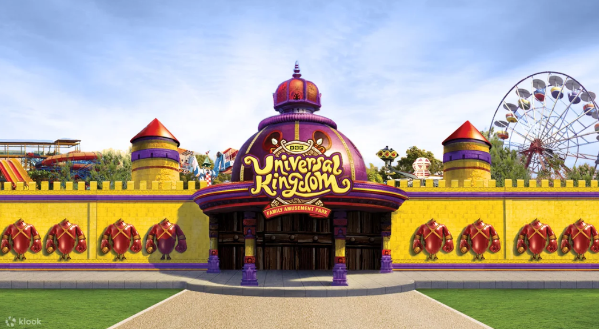

VGP Universal kingdom

VGP Universal Kingdom is an amusement park located in East Coast Road in Chennai, Tamil Nadu, India.
The park offering small rides during the early days of its history became a full-fledged amusement park in 1997 VGP Universal kingdom, spread over 44 acres provides several fun and adventure rides for children, youth and adults, including attractions such as Tamil Nadu's first Snow park, Petting Zoo, Beach Live Shows, Paneer fort, a massive water complex and more. VGP 2000 millennium tower, Water cascades, Paneer fort and statueman are some of the main attractions.
For more details contact : +91 5900065551